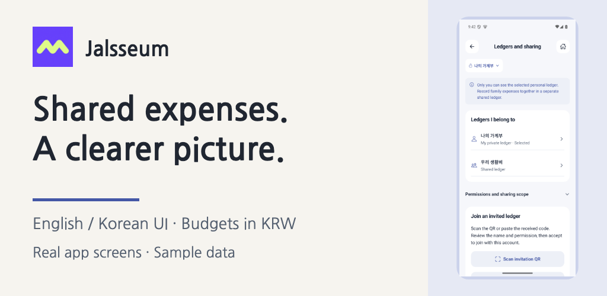

I don't know how to code, and I'm building Jalsseum with AI. It's a budget app for keeping personal spending and shared living costs in separate ledgers. While checking the message-pasting feature, I ran into a problem.
11 of 22 synthetic payment messages failed the initial checks. The samples included cancellation notices, dates with weekdays, and several messages pasted together.
Fix the formats, then check the same samples
After the fixes, all 22 samples passed the checks. That result applies to this synthetic test set. It is not a claim of 100% recognition across card issuers, real messages or physical phones.
Keep a review step before saving
After pasting, you review the amount, date and details before saving. Unsupported messages can be entered manually. I also refined the flow so that adding another message keeps the edits already made.
Building a feature and checking it with different formats turned out to be separate tasks. Further checks on physical phones and real messaging apps are still ahead.
What makes budgeting hard for you?
Entering expenses, choosing categories, or keeping shared spending in sync? Tell me about one frustrating part. Please describe the situation without sending message text that contains personal information.
Jalsseum is in internal iOS and Android testing; public release is still ahead. Interfaces are in Korean and English, with KRW-based budgets and statistics. The figures are from checks of 22 synthetic Korean messages on October 11.
· A non-developer's build diary
I don't code. I'm building a budget app.
I'm building Jalsseum by talking to AI. In three short stories, I share why I separated personal and shared spending, what went wrong with test messages, and how I changed the monthly budget start date.
October 16, 20:00 KST · Building an app without knowing how to code · 25s
October 18, 20:00 KST · Half of my test messages failed · 26s
October 21, 20:00 KST · Does a month have to start on the 1st? · 23s
The three videos are scheduled for the dates above. Narration and captions are in Korean. Tell us what makes keeping a budget difficult for you.
Preparing for release; public downloads are not yet available. Message-test figures describe 22 synthetic samples before and after a fix, not a general recognition rate.
· UPDATE
Our first video is on YouTube.
Meet Jalsseum in a 30-second preview of real app screens: personal records, shared living costs, message review and remaining budgets. The film has Korean text and no audio.
What did we spend together, and what belongs in my own records? Jalsseum starts with that small, everyday distinction.

A place for each kind of spending
Personal ledgers are for your own spending. Shared ledgers let invited members record household costs together. The app shows which ledger you are using and lets you check viewing and editing permissions.
Less repeated typing, with a review step
Paste or share a supported payment message and review the amount, date and category before saving. Unsupported formats may need manual correction. The app does not automatically collect messages or connect to your bank.
A budget that starts with your month
Choose when your monthly budget begins and check the remaining amount by category. The current app supports Korean and English interfaces, with KRW-based budgets.
What happens next
Jalsseum is still in development, with internal testing in progress. General downloads are not open. Before a public release, we need to complete store review and further real-device and purchase checks. We will announce availability and final pricing here.
If you would like to try it, tell us your device and the part of your budget you want to make easier. Early access depends on current testing availability.